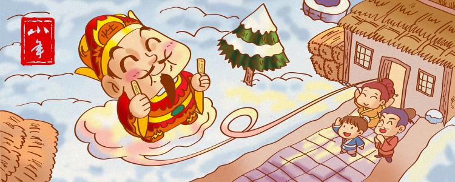
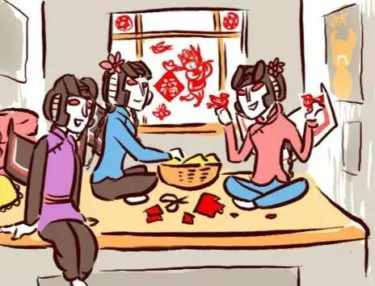

The Little New Year, or Xiaonian in Chinese, usually falls in the week before the Spring Festival.January 17, 2020.Xiaonian in China is not a fixed festival, as it varies with local customs.Folk activities during the off-year mainly include sweeping dust and offering sacrifices to the kitchen.For this reason, the day is also known as the kitchen god (the god who oversees the moral character of each household).Xiaonian in China means that Chinese people begin to prepare special purchases for the Spring Festival and prepare to have a clean Spring Festival.It also symbolizes the New Year with a new image, expressing the good wishes of the Chinese people to bid farewell to the old year and usher in the new.
ORIGIN OF THE FESTIVAL
Worship of the kitchen god is the most important folk activity in the Chinese New Year.Legend kitchen god is a rich man named zhang shan, he married a good wife guo dingxiang, but after the divorce married a woman named li haitang.Greedy and lazy, the 2nd wife soon used up all the family's money and remarried.Zhang shan experienced the decline and fire of his family and became a beggar.One day, he begged for food from a family. The hostess gave him food -- it was his ex-wife who gave him food.He was so ashamed that he went into the kitchen and burned to death.The jade emperor heard the news and thought zhang shan was not so bad because he could change his mind.Therefore, the jade emperor gave him the title of "kitchen god" because he died in the kitchen and ordered him to return on the 23rd and 24th of the 12th lunar month and on the New Year's eve.The Chinese respect the kitchen god because he is going to heaven.Therefore, Chinese people have formed the custom of worshiping the kitchen god on the 23rd or 24th day of the twelfth lunar month, praying for peace and prosperity in the coming year.
FESTIVAL CUSTOMS
Sweeping the dust is actually a thorough cleaning of the house.In northern China, the Chinese New Year is celebrated on the 23rd of the 12th lunar month, while in southern China it is celebrated on the 24th, six or seven days before the Spring Festival.Therefore, the preparations for the Spring Festival are more urgent, and every family needs a thorough cleaning to welcome a clean New Year.
Worship of the kitchen god is the most important activity in the Chinese New Year.According to folklore, the kitchen god would report the good and evil of each family to the jade emperor on the 23rd of the 12th lunar month for his reward and punishment.During the sacrifice to the kitchen god, candy, water, beans and hay were placed on a table in front of the image.The last three pieces are for the kitchen god.In addition, the northeast sugar (a kind of maltose) is melted and applied to the lips of the kitchen god to prevent him from saying anything bad.In China, only men can worship the kitchen god.
Paper-cut is one of the most important customs of the Chinese New Year.This is for the Spring Festival.There are many forms of paper cutting, such as animals, plants, flowers, fruits and so on.The purpose of Posting paper-cuts on the Windows is to pray for good results in the New Year.
